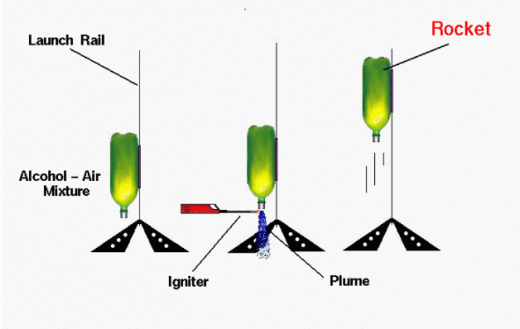

Bottle Rockets
Bottle rockets are simple yet effective water-propelled rockets made from plastic bottles. They work by filling the bottle with water and pressurizing it with air. When released, the water is expelled forcefully, generating thrust and propelling the rocket upward. They are commonly used in educational experiments to demonstrate Newton’s Third Law of Motion.
About Water Rockets
Flying model rockets is a relatively safe and inexpensive way for students to learn the basics of forces and the response of a vehicle to external forces. A model rocket is subjected to four forces in flight: weight, thrust, and the aerodynamic forces, lift and drag. There are many different types of model rockets. One of the first and simplest type of rocket that a student encounters is the bottle, or water rocket. The water rocket system consists of two main parts, the launcher and the rocket.
Generic Launcher
The figure shows a generic launcher, though designs vary. It includes a base for support, a hollow launch tube inserted into the rocket, and a feeder line connecting to an air pump. The pump pressurizes the rocket’s body tube to generate thrust.
We have attached a pressure gage to the feeder line to display the change in pressure in the system. This part of the system is very similar to the simple compressed air rocket.
Components of the Rocket
The rocket is typically a 2-liter soda bottle, partially filled with water as the propellant. Since water is much heavier than air, it generates more thrust. Placed on the launch tube, the bottle becomes a sealed pressure vessel, matching the air pump’s pressure. Fins at the base ensure stability during flight.
-
Body Tube
The main structure, usually a 2-liter soda bottle, holds water and compressed air for thrust generation.
-
Launch Tube
A hollow tube inserted into the rocket’s base, connected to an air pump for pressurization.
-
Fins
Attached to the lower section, these stabilize the rocket in flight, reducing unwanted rotation and drag.
-
Nozzle
The narrow opening at the base, allowing pressurized water to eject rapidly, creating upward thrust.
Flight of a Water Rocket
Water rockets are among the simplest type of rocket that a student encounters. The body of the rocket is an empty, plastic, two-liter soda bottle. Cardboard or balsa fins are attached to the bottom of the bottle for stability, and a fairing and nose cone are added to the top as a payload.
Prior to launch
The rocket is filled with water, usually around 40% of its volume, and placed on a launch tube. Air is pumped in to pressurize it, and thrust is created as water is expelled through the nozzle. Like real rockets, its weight changes during ascent as water exits.
As water exits, the air inside expands, reducing pressure and decreasing thrust. Weight and thrust keep changing during powered flight. After all the water is expelled, leftover air pressure adds a small thrust until it equalizes with the outside air. Then, the rocket enters a coasting ascent.
Remainder of the Flight
After thrust ends, the rocket moves like a bullet, but air resistance affects its path. It slows due to weight and drag, reaching a peak altitude. Then, gravity pulls it back down. Some rockets use parachutes or payload detachment for recovery, allowing reuse.
Simulation of Bottle Rocket
Creation of the upward thrust
Whoosh Rocket
An interesting variation of the two-liter bottle rocket is the whoosh rocket.This version of the whoosh rocket was developed by Roger Storm of Fairview High School and Mark Skor of North Royalton High School; both high schools are located in suburbs of Cleveland, Ohio.
A Whoosh rocket is a type of bottle rocket that uses a mixture of alcohol and air as fuel. When ignited, the fuel rapidly combusts, producing a jet of hot gases that propels the rocket upward. Unlike water rockets, Whoosh rockets rely on chemical energy rather than pressurized air and water, creating a distinctive "whoosh" sound during launch.
-

Experimentation
A Whoosh rocket uses a two-liter soda bottle but replaces water with a lighter alcohol-air mixture as fuel. The bottle pressurizes during combustion, producing thrust. Since the exhaust is lighter than water, the rocket generates less thrust and follows a more ballistic path. Though it usually flies under 50 feet, it helps students understand how liquid fuel combustion creates thrust.
View Demonstration -

Launch
A Whoosh rocket is launched using a model rocket pad with a straw guiding it along the rail. A small hole in the bottle cap acts as a nozzle. A few drops of rubbing alcohol are added and shaken to mix with air. The rocket is placed on the rail, and an igniter near the nozzle ignites the fuel, creating a quick burst of thrust. As the hot gases expand, the rocket lifts off, following a short ballistic flight before falling back to the ground.
-
Reaction Process
Inside the bottle a chemical reaction occurs which converts the alcohol and the oxygen into carbon dioxide, water, and heat as described by this chemical equation:
\[ 2C_3H_7OH + 9O_2 \rightarrow 6CO_2 + 8H_2O + \text{heat} \]
The reaction happens quickly, heating the exhaust gases and increasing pressure in the bottle. Gas exits through the cap hole, creating thrust per Newton’s third law. If thrust exceeds the bottle’s weight, the rocket accelerates up the rail (Newton’s first law). The powered flight is brief, with most of the flight influenced by weight and drag.
-
CAUTION
Exercise extreme caution when flying a whoosh rocket.
- 1. Always have teacher supervision and use only soda bottles, as water bottles may explode under pressure.
- 2. Drill a 3/8-inch nozzle in the cap—smaller holes can cause dangerous pressure buildup.
- 3. Use only rubbing alcohol as fuel; other fuels may lead to explosions.
- 4. Keep a fire extinguisher nearby, wear safety glasses, and fire the rocket only outdoors in a safe area.
- 5. The rocket may be hot upon landing, so handle it carefully.
{kind=link}